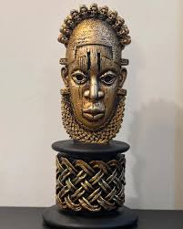
Benin Mask
Iconic Edo carving symbolizing Nigerian royal heritage. The Benin ivory mask is a renowned sculptural portrait of Queen Idia, mother of Oba Esigie, and a masterpiece of 16th-century African art.
Immerse yourself in a vibrant collection of stunning masterpieces, created by talented artists from around the world. Discover a diverse range of styles and themes—from cultural and abstract art to modern international pieces. Whether you're an art enthusiast or simply seeking inspiration, explore a world where creativity knows no bounds.

Iconic Edo carving symbolizing Nigerian royal heritage. The Benin ivory mask is a renowned sculptural portrait of Queen Idia, mother of Oba Esigie, and a masterpiece of 16th-century African art.
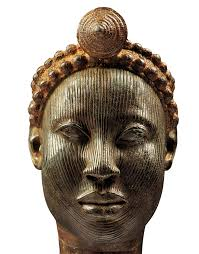
Naturalistic Yoruba bronze from the 12th–15th century, believed to depict rulers of Ife. These heads remain some of Africa’s greatest sculptural achievements.
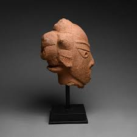
Over 2,000 years old, Nok terracottas are among the earliest sub-Saharan artworks, famous for their intricate hairstyles and stylized features.
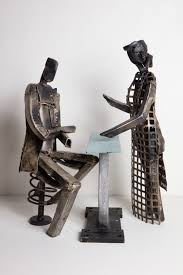
Contemporary works created from repurposed materials like bolts and scrap metal, addressing themes of urban life, society, and culture.
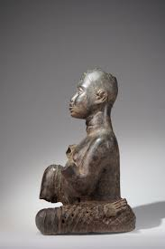
Rare bronze and copper figures linked to Nupe Kingdom legends. These pieces reveal a blend of Ife and Benin influences with a unique local style.
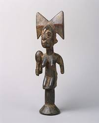
Oshe Sango staffs carved with double-axe motifs, symbolizing thunderbolts. Often carried in ceremonies for Sango, the Yoruba deity of thunder.
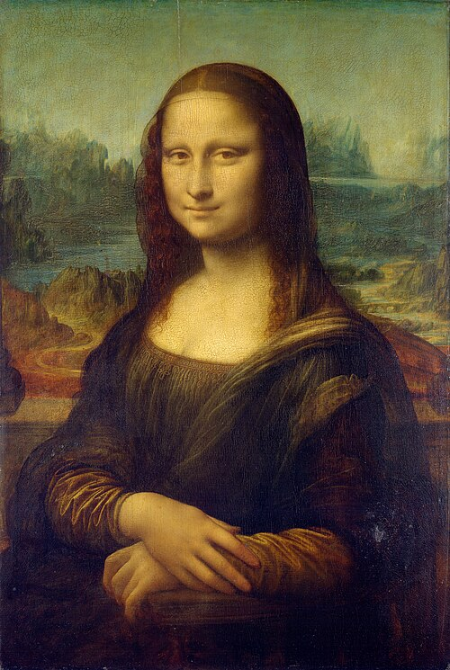
Leonardo da Vinci’s masterpiece (1503–1519), famed for its enigmatic smile and subtle realism. One of the most recognized works of art worldwide.
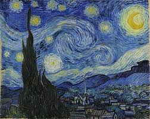
Vincent van Gogh’s swirling night sky (1889), painted from his asylum room window. A vivid expression of emotion through color and form.
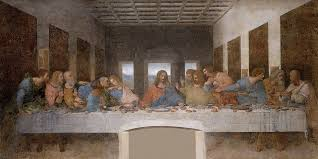
Leonardo da Vinci’s mural (late 1400s) capturing the dramatic moment after Jesus announces his betrayal among the apostles.
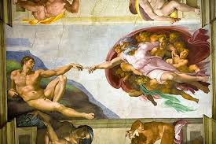
Michelangelo’s Sistine Chapel fresco (1512), depicting God’s spark of life reaching Adam — one of the most iconic images in art.
.JPG)
Edvard Munch’s haunting painting (1893), symbolizing modern human anxiety with its tormented figure and blood-red sky.
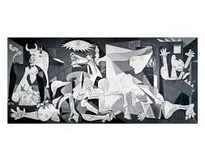
Pablo Picasso’s monumental protest painting (1937), depicting the horrors of war with a fragmented Cubist style.

Wassily Kandinsky’s chaotic, colorful masterpiece (1913), a landmark of pure abstraction expressing emotion through form and color.

Jackson Pollock’s drip painting (1948), showcasing Abstract Expressionism through energetic layers of paint.

Piet Mondrian’s 1930 grid-based abstract using pure primary colors and strict geometry to explore harmony.

Kazimir Malevich’s Suprematist icon (1915) — a radical statement on pure form and the “zero point” of painting.
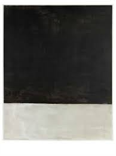
Mark Rothko’s somber late painting (1969), using color fields to evoke contemplation and deep human emotion.
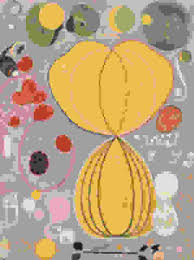
Hilma af Klint’s monumental work (1907), representing life’s stages with biomorphic shapes and vibrant colors.